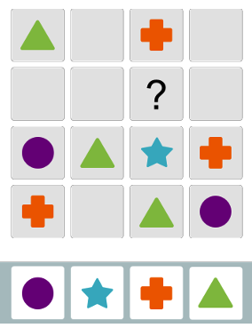
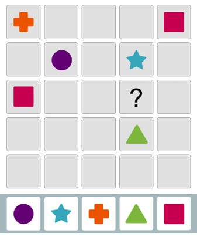
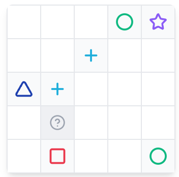
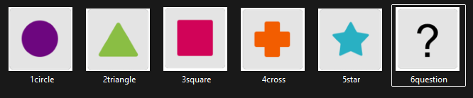
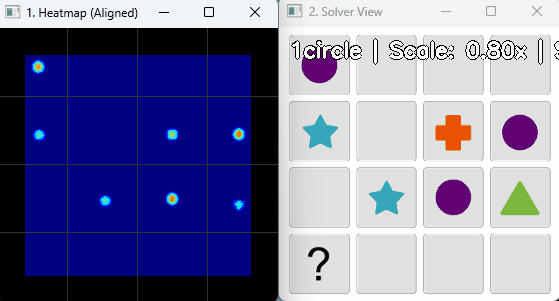
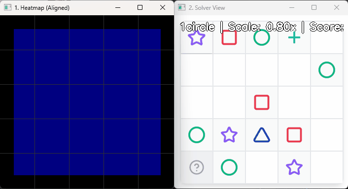
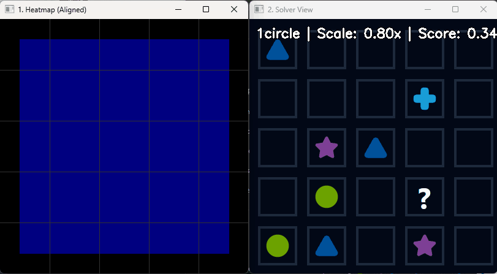
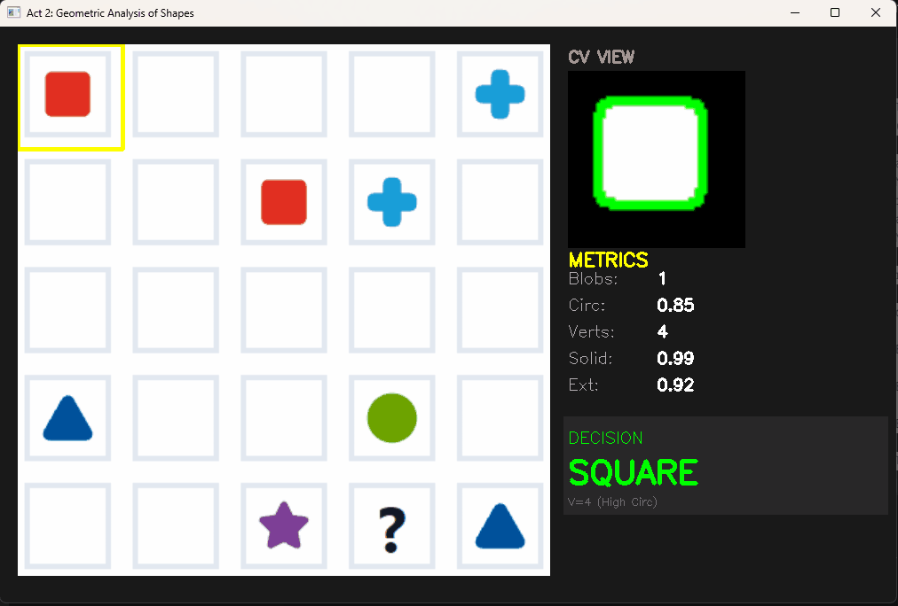
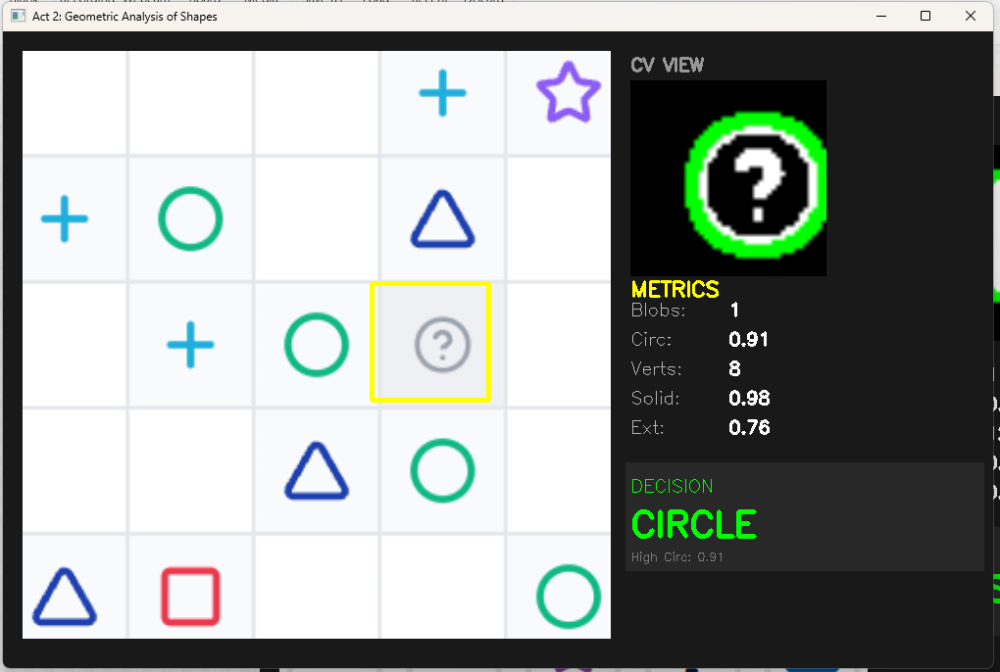
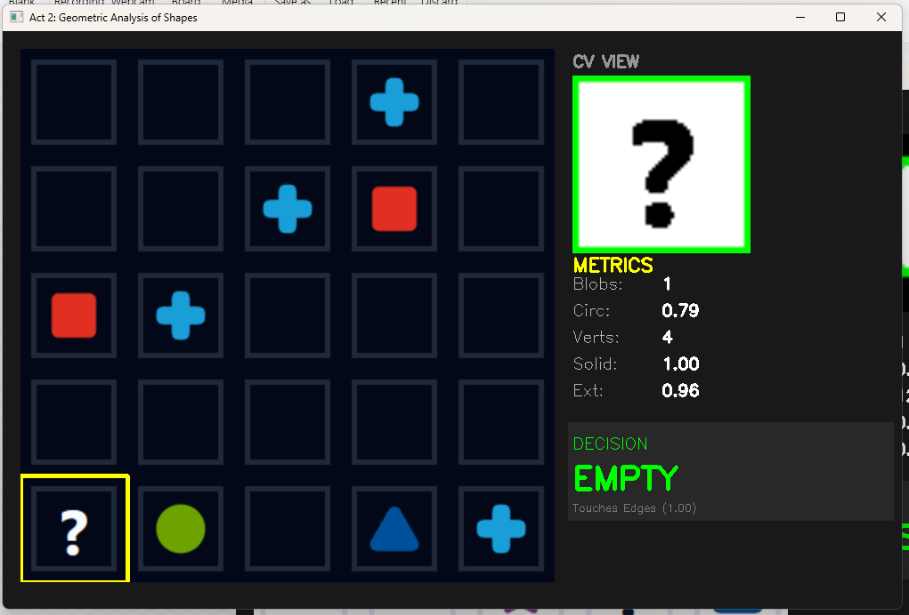

Gap Challenge Solver


Source idea credited to Dianyi Yang: kv9898/gap_challenge_solver
You can try the exercises yourself here:
- Gap Challenge
- Gap Challenge Practice
You can try the final SVM-powered solver here: Launch Streamlit App

The Challenge
The “Gap” puzzle is a logic game where players must fill a missing cell in a grid, ensuring no symbol repeats in any row or column. My goal was to build a tool that could solve this instantly from a simple screenshot.


Gap Challenge - Each shape can only appear in a row or column once. The player must use logic by elimination to find the shape that belongs in the question mark.
While the logic puzzle itself is a standard Constraint Satisfaction Problem, digitizing the grid from a raw image proved to be the real engineering challenge. This post documents the three major iterations (“Acts”) of my Computer Vision pipeline and the lessons learned from each:
- Act 1: Naive Template Matching
- Act 2: Geometric Determination of Shapes
- Act 3: Image Classification with SVM
Major Problem Faced with Image Recognition
A major issue was the different forms that the shapes could take based on different Gap Challenge applications. Some shapes were hollow, some backgrounds were black and some bounding grids were just lines.



Note the difference in shapes and grid colors. The hard part was building a robust solution that would be able to handle all these different versions.
Act I: The Naive Approach (Template Matching)
My first instinct was to use Template Matching. I cropped reference images of each shape (Star, Circle, Square) and used cv2.matchTemplate to slide them over the screenshot, looking for pixel-perfect matches. I tried to account for the different size of the screenshots as well, scaling the reference shapes to match the screenshots.


The Cause of Failure
This method worked well on the base example but failed when tested on other forms of the puzzle. Although I implemented multi-scale matching to handle zoom levels, the approach hit a hard ceiling when the puzzle’s visual style changed.
When the game switched to “Dark Mode” or used “Hollow” shapes, my solid-colored templates failed immediately. To fix this, I would have needed to crop and save a new template for every possible theme variation.


Lesson: Hard-coding pixel comparisons doesn’t work if the inputs vary significantly. I needed a more robust method and decided to try and use the geometric differences in shapes to differentiate them.
Act II: The Geometric Pivot (Heuristics)
For the second iteration, I moved to Feature Extraction. Instead of matching images, I used cv2.findContours to extract the shapes and analyze their geometric properties.
I built a Decision Tree based on metrics like:
- Vertices: cv2.approxPolyDP (e.g., 3 vertices = Triangle).
- Solidity: Area divided by Convex Hull Area (distinguishes solid Squares from hollow Crosses).
- Circularity: \(4\pi \times \frac{Area}{Perimeter^2}\) (distinguishes Circles from Triangles).
The “Live Scanner” Debugger
To refine my thresholds, I built a visualization tool that calculated these metrics for every cell so that I could debug the errors efficiently.

The Bottleneck
While robust against scale, this method suffered from “Whack-a-Mole” logic, where more issues would pop-up after fixing one and I realised I was trying to fix symptoms instead of fixing the root cause of the recognition issues:
- The “Hollow” Edge Case: A hollow square has low solidity, confusing the algorithm.
- The “Question Mark” Problem: The question mark consists of two separate blobs (hook + dot), breaking the single-contour logic.


The “Whack-a-Mole” logic resulted in decision trees like:
# Attempts to handle edge cases manually
if vertices > 8 and circularity < 0.6 and num_blobs == 1:
return "Star"
elif num_blobs == 2:
return "Question"This resulted in more and more rules that I wasn’t even sure of and I decided a needed a system to learn these rules itself.
Act III: The Robust Solution (Support Vector Machines)
In the final phase, I treated this as a classification problem. I chose a Support Vector Machine (SVM) because they perform exceptionally well on high-dimensional binary data (pixel maps) with smaller datasets.
1. The Data Pipeline (Solving Distribution Shift)
A mistake that I made at the start was training on “perfect” data but testing on “messy” data.
I manually took multiple screenshots of the grids, with minor variations, to create a large train dataset for the SVM.
However, I realised that the SVM was not performing well, because the cropping method used for the test data was different from the perfectly cropped screenshots i was taking for the train data.
To fix this, I used the test cropping algorithm to build an automated pipeline (collect_feedback_data.py) that extracted thousands of training examples directly from screenshots.
This ensured my training data included all the real-world noise (grid lines, anti-aliasing) that the model would see in production. I utilized Otsu’s Binarization here to automatically find the optimal threshold for separating shapes from the background, solving the “Dark Mode” issue.

2. The “Universal Translator” (Preprocessing)
To make the model immune to lighting changes and user cropping errors, I engineered a standardization pipeline: 1. Resize to 64x64.
2. Corner Difference Strategy: Calculate the average background color from the image corners and subtract it. This isolates the shape regardless of whether the theme is Dark or Light.
3. Centering: Find the bounding box of the shape and center it on a black canvas.
3. Fine-Tuning the Brain (Grid Search)
An SVM is only as good as its hyperparameters. Default settings often lead to overfitting, where the model memorizes the training data but fails on new inputs.
To solve this, I implemented a Grid Search to exhaustively test combinations of C (Regularization) and Gamma (Kernel Coefficient). This allowed me to mathematically find the configuration that ignored minor pixel noise while maintaining a distinct decision boundary between similar shapes (like the Circle and the hollow Ring).
4. X-Ray Vision (Verification)
Machine Learning models can be “black boxes.” To trust the system, I built a side-by-side debugger comparing the Human View (RGB) against the Machine View (Preprocessed). This allowed me to catch preprocessing errors—like the dot of the ‘?’ being filtered out as noise—before retraining the model.

The Solver Logic (Backtracking)
With a reliable Vision pipeline returning a 2D matrix (e.g., [['Star', 'Empty'], ['Circle', 'Square']]), the problem reduced to a standard algorithm.
I implemented a Recursive Backtracking solver. It works by:
1. Scanning for an empty cell.
2. Guessing a shape from the available options.
3. Validating row/column constraints.
4. Recursively attempting to solve the rest of the grid.
5. Backtracking if a guess leads to a contradiction.
def solve_with_backtracking(board, universe):
# Base Case: No empty spots left
if not find_empty(board): return True
row, col = find_empty(board)
for shape in universe:
if is_valid_move(board, shape, row, col):
board[row][col] = shape
# Recursive Step
if solve_with_backtracking(board, universe): return True
# Backtrack
board[row][col] = 'blank'
return FalseConclusion & Tech Stack
This project was a lesson in selecting the right tool for the job. While deep learning (CNNs) could have solved this, it would have been overkill for a 5-class problem. An SVM combined with robust Data Engineering provided a lightweight, instant, and highly accurate solution (99% accuracy on test set).
- Language: Python 3.10
- Vision: OpenCV (Canny, Otsu’s Binarization, Contours)
- ML: Scikit-Learn (SVM, GridSearch)
- Frontend: Streamlit